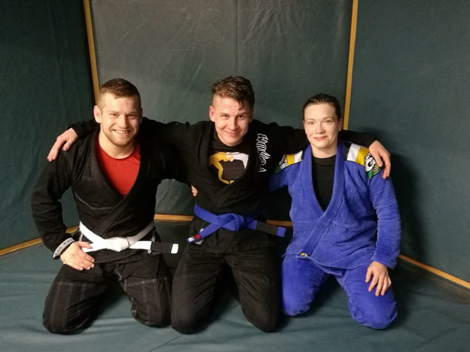

My regular training partners
These two gentlemen made it possible to train continuously in Seinäjoki. I traveled around Finland with both people, competing in various events.

Name for the follow-trophy
I have always been an athletic person. When I decided to practice consistently and purposefully, the club rewarded me by putting my name on the trophy.

Train with a Finnish legend
One of the good role models is this person on the right whose workouts
have inspired and motivated me to train in the early days of the sport.
For more information, click on the person.